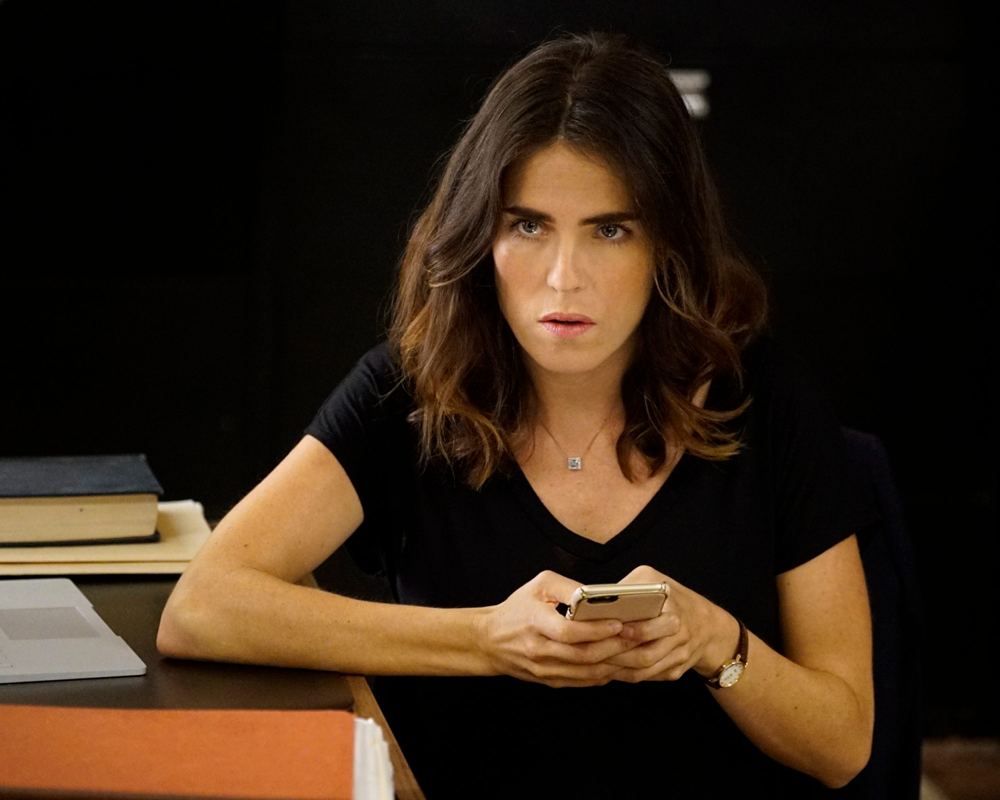
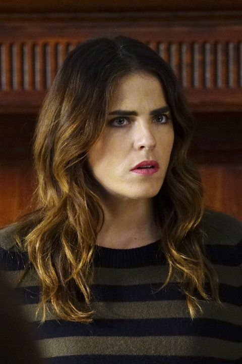
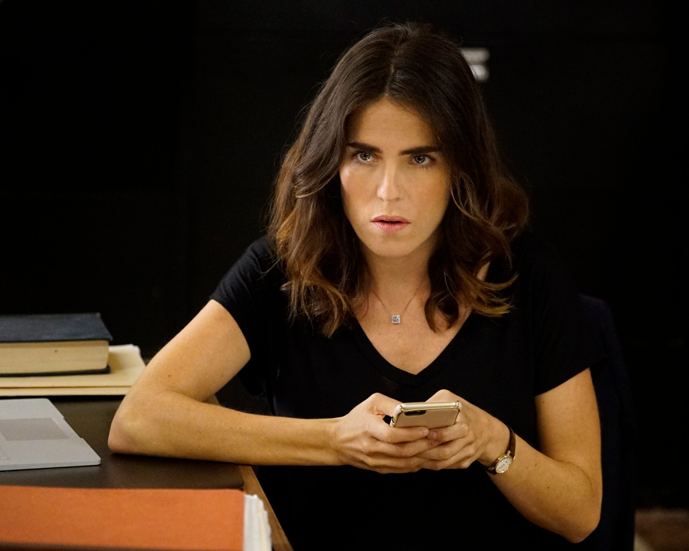
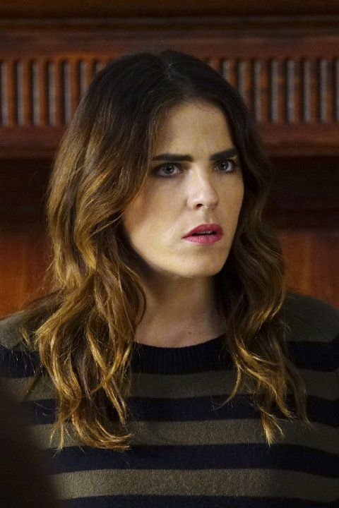
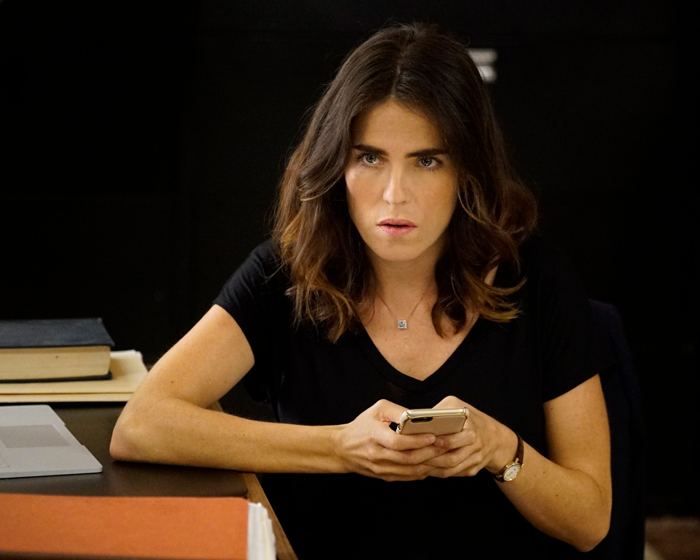
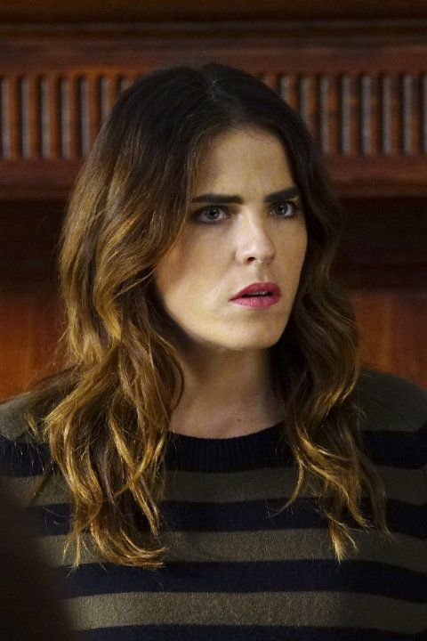

Лорел Кастильо выросла в семье, где преступления были частью жизни.
Дочь могущественного и жестокого магната из семьи олигархов. Сбежала от контроля семьи, чтобы строить жизнь самостоятельно.
Имеет бурные отношения с Уэсом, от которого рожает сына.
По мере развития сериала её прошлое и семья всё больше вовлекаются в сюжет.
Умная, аналитичная, хладнокровная и невероятно устойчивая под давлением.
Вначале кажется тихой и замкнутой, но позже раскрывается её внутренняя сила, решимость и готовность на радикальные поступки.
Она — тактик группы, часто предлагающая самые разумные, хотя и циничные, решения.
Её любовь к Уэсу и позже к сыну — её главные уязвимые места.


 


